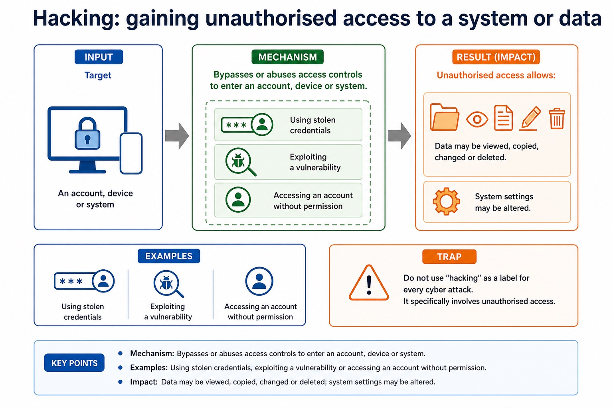
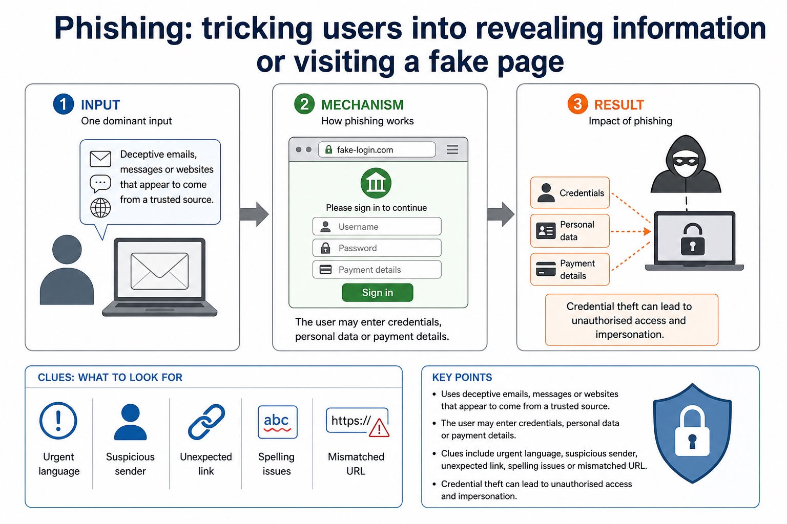
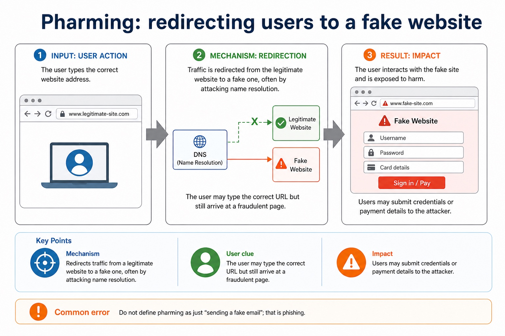
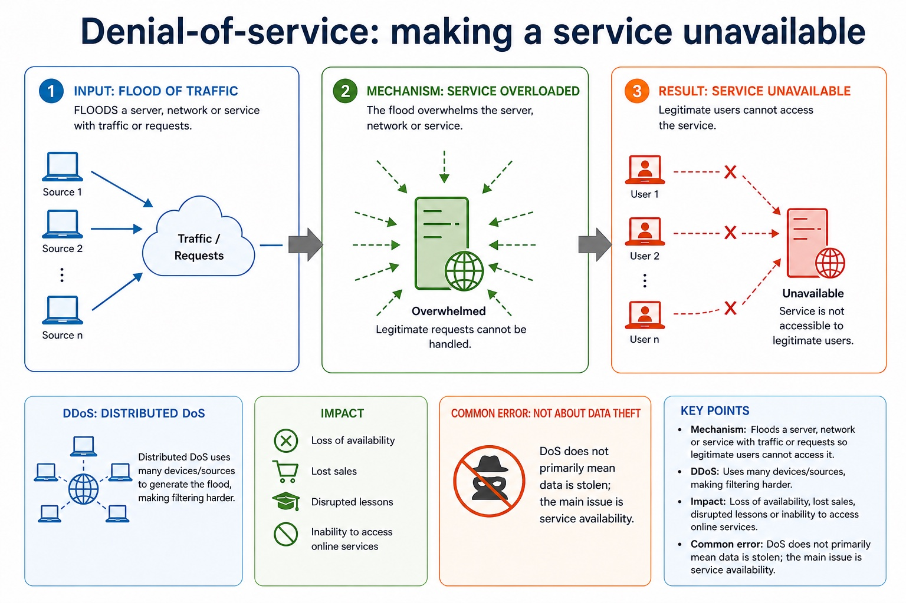
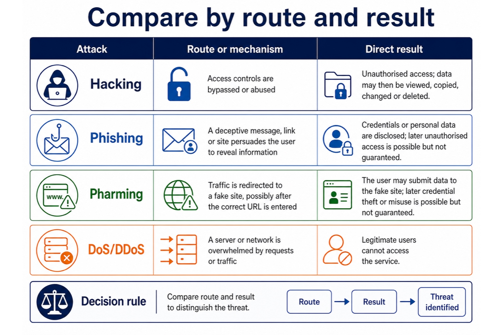
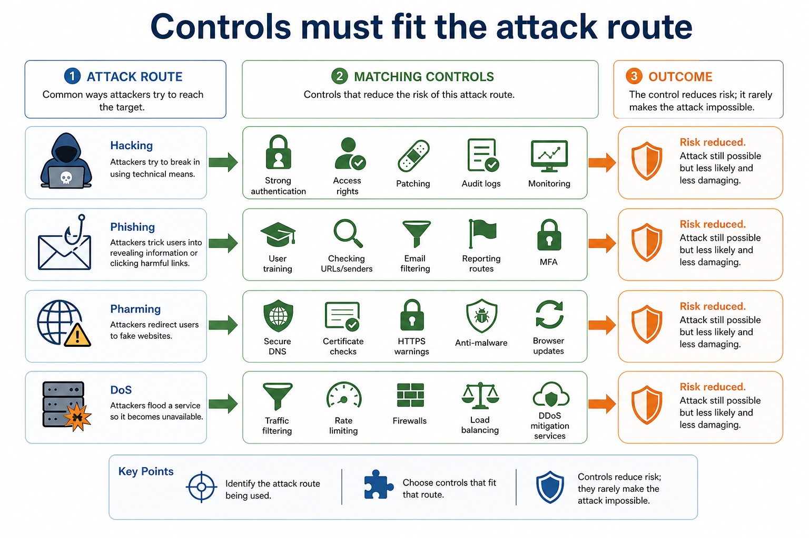

Required internet threats and matching risk-reduction methods
The required threats are malware (virus and spyware), hackers, phishing and pharming. A hacker gains unauthorised access to a computer system or data. Phishing uses a deceptive message, link or site to persuade a user to disclose information. Pharming redirects traffic to a fake website, possibly even after the user enters the correct address.
Methods restrict risk only when their mechanism matches the threat: updated anti-virus and anti-spyware can detect known malware; user training and independent contact checks reduce phishing; secure DNS, certificate/HTTPS checks and patched software reduce pharming risk; strong authentication, access rights, patching, firewalls and monitoring reduce unauthorised access by hackers.
A control reduces likelihood or impact; it rarely makes an attack impossible. Layered controls are needed because people, software, credentials and network traffic provide different attack routes.
Worked example: Protect an online payroll service
Staff receive a phishing email while a hacker probes the server and pharming redirects one user towards a fake site. Training and an independent sender check reduce phishing risk; multi-factor authentication reduces the value of a stolen password; a firewall filters unwanted traffic; access rights limit what an authenticated account may change; updated anti-virus and anti-spyware detect known virus or spyware signatures; secure DNS and certificate warnings reduce pharming risk.
Core syllabus practice
Required internet threats and matching risk-reduction methods: apply and assess
Targeted practice
1. Compare phishing from pharming.
Show answer
Phishing persuades through a deceptive message/link/site; pharming redirects traffic to a fake site, potentially after the correct address is entered.
2. What is the syllabus meaning of a hacker threat?
Show answer
A person gaining or attempting unauthorised access to a computer system or data.
3. Draw lines to match virus, spyware, phishing and pharming to one suitable risk-reduction method each.
Show answer
Updated anti-virus; updated anti-spyware; training/independent verification; secure DNS plus certificate/HTTPS checks, respectively.
4. Why are layered controls required?
Show answer
Different controls address different attack routes, so failure or bypass of one control need not expose the whole system.
Exam-style question
6 marks
For each of virus, spyware, hacking, phishing and pharming, describe the threat route and one matching method that restricts its risk.
Show MS
Answer
Guidance
Marks
virus route plus anti-virus mechanism
Do not define phishing and pharming identically or award a control that is unrelated to the stated attack route.
1
spyware route plus anti-spyware mechanism
1
hacker/unauthorised-access route plus a matching access/network control
1
phishing/deception route plus training or independent verification
1
pharming/redirection route plus secure DNS/certificate/HTTPS or patched-software control
1
states that controls reduce rather than eliminate risk
1
Lesson 065 | 45 minutes | Paper 1 Section 6 | Security, privacy and data integrity
Same target, different route: access, trick, redirect, overload.
This lesson separates four common attack types. Hacking focuses on unauthorised access.
Phishing tricks users into giving information. Pharming redirects users to a fake site.
Denial-of-service attacks make a service unavailable.
Definehacking, phishing, pharming and DoS with precise wording
Classifyattack scenarios by mechanism, not by panic level
Explainimpact and suitable controls using CIA and authenticity language
Hacking -> unauthorised accessPhishing -> fake request / fake pagePharming -> redirected to fake siteDoS -> service overwhelmed
Exam shortcut: name the route, then explain the damage.
Why this matters
Cambridge-style answers reward the mechanism. "It is dangerous" is true, but it is not a full mark machine.
Common error
Phishing and pharming both involve fake destinations, but phishing tricks the user; pharming redirects the traffic.
Warm-up hook
A user types the correct bank URL but lands on a convincing fake banking page. What is the best diagnosis?
The user did not mistype. The browser is basically saying, "I followed the map; the map lied."
Choose one. The clue is correct URL plus redirection.
Knowledge point 1
Start from mechanism, then discuss impact
AssetData, account, system or service being protected.Attack vectorThe route used by the attacker: access, deception, redirection or flooding.ImpactLoss of confidentiality, integrity, availability or authenticity.ControlA safeguard that reduces risk, detects attack or supports recovery.
Start from mechanism, then discuss impact: source-grounded visual explanation.
Lesson fact: Asset Data, account, system or service being protected.
Lesson fact: Attack vector The route used by the attacker: access, deception, redirection or flooding.
Lesson fact: Impact Loss of confidentiality, integrity, availability or authenticity.
Lesson fact: Control A safeguard that reduces risk, detects attack or supports recovery.
Knowledge point 2
Hacking: gaining unauthorised access to a system or data
MechanismBypasses or abuses access controls to enter an account, device or system.ExamplesUsing stolen credentials, exploiting a vulnerability or accessing an account without permission.ImpactData may be viewed, copied, changed or deleted; system settings may be altered.Common errorDo not use "hacking" as a label for every cyber attack. It specifically involves unauthorised access.
Hacking: gaining unauthorised access to a system or data

Hacking: gaining unauthorised access to a system or data: source-grounded visual explanation.
Lesson fact: Mechanism Bypasses or abuses access controls to enter an account, device or system.
Lesson fact: Examples Using stolen credentials, exploiting a vulnerability or accessing an account without permission.
Lesson fact: Impact Data may be viewed, copied, changed or deleted; system settings may be altered.
Lesson fact: Common error Do not use "hacking" as a label for every cyber attack. It specifically involves unauthorised access.
Knowledge point 3
Phishing: tricking users into revealing information or visiting a fake page
MechanismUses deceptive emails, messages or websites that appear to come from a trusted source.User actionThe user may enter credentials, personal data or payment details.CluesUrgent language, suspicious sender, unexpected link, spelling issues or mismatched URL.ImpactCredential theft can lead to unauthorised access and impersonation.
Phishing: tricking users into revealing information or visiting a fake page

Phishing: tricking users into revealing information or visiting a fake page: source-grounded visual explanation.
Lesson fact: Mechanism Uses deceptive emails, messages or websites that appear to come from a trusted source.
Lesson fact: User action The user may enter credentials, personal data or payment details.
Lesson fact: Impact Credential theft can lead to unauthorised access and impersonation.
Knowledge point 4
Pharming: redirecting users to a fake website
MechanismRedirects traffic from a legitimate website to a fake one, often by attacking name resolution.User clueThe user may type the correct URL but still arrive at a fraudulent page.ImpactUsers may submit credentials or payment details to the attacker.Common errorDo not define pharming as just "sending a fake email"; that is phishing.
Pharming: redirecting users to a fake website

Pharming: redirecting users to a fake website: source-grounded visual explanation.
Lesson fact: Mechanism Redirects traffic from a legitimate website to a fake one, often by attacking name resolution.
Lesson fact: User clue The user may type the correct URL but still arrive at a fraudulent page.
Lesson fact: Impact Users may submit credentials or payment details to the attacker.
Lesson fact: Common error Do not define pharming as just "sending a fake email"; that is phishing.
Knowledge point 5
Denial-of-service: making a service unavailable
MechanismFloods a server, network or service with traffic or requests so legitimate users cannot access it.DDoSDistributed DoS uses many devices/sources, making filtering harder.ImpactLoss of availability, lost sales, disrupted lessons or inability to access online services.Common errorDoS does not primarily mean data is stolen; the main issue is service availability.
Denial-of-service: making a service unavailable

Denial-of-service: making a service unavailable: source-grounded visual explanation.
Lesson fact: Mechanism Floods a server, network or service with traffic or requests so legitimate users cannot access it.
Lesson fact: DDoS Distributed DoS uses many devices/sources, making filtering harder.
Lesson fact: Impact Loss of availability, lost sales, disrupted lessons or inability to access online services.
Lesson fact: Common error DoS does not primarily mean data is stolen; the main issue is service availability.
Knowledge point 6
Compare by route and result
Attack
Route or mechanism
Direct result
Hacking
Access controls are bypassed or abused.
Unauthorised access; data may then be viewed, copied, changed or deleted.
Phishing
A deceptive message, link or site persuades the user to reveal information.
Credentials or personal data are disclosed; later unauthorised access is possible but not guaranteed.
Pharming
Traffic is redirected to a fake site, possibly after the correct URL is entered.
The user may submit data to the fake site; later credential theft or misuse is possible but not guaranteed.
DoS/DDoS
A server or network is overwhelmed by requests or traffic.
Legitimate users cannot access the service.
Compare by route and result

Compare by route and result: source-grounded visual explanation.
Lesson fact: Route or mechanism
Lesson fact: Direct result
Lesson fact: Access controls are bypassed or abused.
Lesson fact: Unauthorised access; data may then be viewed, copied, changed or deleted.
Lesson fact: Phishing
Lesson fact: A deceptive message, link or site persuades the user to reveal information.
Lesson fact: Credentials or personal data are disclosed; later unauthorised access is possible but not guaranteed.
Lesson fact: Pharming
Lesson fact: Traffic is redirected to a fake site, possibly after the correct URL is entered.
Lesson fact: The user may submit data to the fake site; later credential theft or misuse is possible but not guaranteed.
Lesson fact: DoS/DDoS
Lesson fact: A server or network is overwhelmed by requests or traffic.
Knowledge point 7
Controls must fit the attack route
Against hackingStrong authentication, access rights, patching, audit logs and monitoring.Against phishingUser training, checking URLs/senders, email filtering, reporting routes and MFA.Against pharmingSecure DNS, certificate checks, HTTPS warnings, anti-malware and browser updates.Against DoSTraffic filtering, rate limiting, firewalls, load balancing and DDoS mitigation services.
Do not overclaim. A control reduces risk; it rarely makes the attack impossible.
Controls must fit the attack route

Controls must fit the attack route: source-grounded visual explanation.
Lesson fact: Against hacking Strong authentication, access rights, patching, audit logs and monitoring.
Lesson fact: Against phishing User training, checking URLs/senders, email filtering, reporting routes and MFA.
Lesson fact: Against pharming Secure DNS, certificate checks, HTTPS warnings, anti-malware and browser updates.
Lesson fact: Against DoS Traffic filtering, rate limiting, firewalls, load balancing and DDoS mitigation services.
Lesson fact: Do not overclaim. A control reduces risk; it rarely makes the attack impossible.
Interactive classifier
Classify the attack by the clue
Select a scenario and compare the route, impact and common wrong answer.
Worked examples
Four model answers with the mark-winning mechanism visible
Practice with instant checking
Short answers: be precise, then check
Type a concise answer. Use the local answer button if you need a model response.
Mistake debugging
Fix the sentence before it loses marks
Exam-style questions
Original Cambridge-style questions with expandable MS
Answer first. Then open the mark scheme and compare wording strictly.
DoSThe main impact is unavailable service, not necessarily stolen data.
Homework
Homework tasks
Task 1: Four definitionsWrite one precise definition each for hacking, phishing, pharming and DoS. Each must include the attack route.Task 2: Scenario tableCreate a table with five new scenarios. For each, classify the attack, state the impact and recommend one control.Task 3: 6-mark answerAnswer: "Compare phishing and pharming, and explain how each can lead to unauthorised access." Use two paragraphs and Cambridge-style keywords.